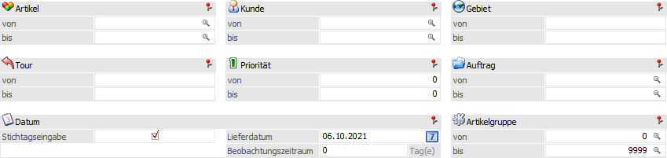
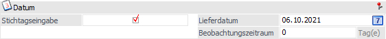
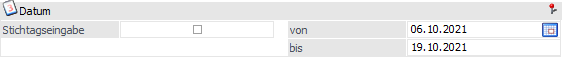

In dem Bereich "Selektion" des Programms "Kundenbestellungen bearbeiten" wird eine Einschränkung auf die auszuliefernden Kundenaufträge vorgenommen.
Achtung
Neben den hier vorzunehmenden Einschränkungen stehen weitere Einstellungen über den Button "Optionen" zur Verfügung.

Folgende Möglichkeiten werden zur Selektion der zu bearbeitenden Belege angeboten:
Ø Artikel von / bis
An dieser Stelle kann eine Artikeleingrenzung vorgenommen werden. Bleiben die Felder leer, werden alle Artikel berücksichtigt.
Hinweis
Wird im Feld Artikel "von - bis" z.B. nur eine Artikelnummer eingegeben und dieser Artikel besitzt Ausprägungen, werden alle Ausprägungen automatisch mitberücksichtigt. Nur wenn während des Anklickens des "OK"-Buttons die STRG-Taste gedrückt wird, wird nur der Hauptartikel alleine berücksichtigt.
Ø Kunde von / bis
Durch Eingabe einer Kundenselektion kann das Ausmaß der Kundenbestellungen eingeschränkt werden.
Ø Gebiet von / bis
Hier kann das Gebiet eingeschränkt werden, welches beliefert werden soll.
Ø Tour von / bis
Hier kann die Tour eingeschränkt werden, welche beliefert werden soll.
Ø Priorität von / bis
Einschränkung auf Prioritäten, die ausgeliefert werden sollen.
Ø Auftrag von / bis
Einschränkung auf die Auftragsnummern, welche ausgeliefert werden sollen.
Ø Stichtagseingabe
Wird diese Option aktiviert (Standard-Einstellung), kann in den nachfolgenden Feldern ein Lieferdatum samt einem Beobachtungszeitraum eingegeben werden.

Ist diese Option nicht aktiviert, ist eine Einschränkung auf das Lieferdatum mit einer "von / bis"-Eingrenzung möglich.

Ø Lieferdatum bzw. Datum von / bis
Abhängig von der Option "Stichtagseingabe" kann an dieser Stelle das Lieferdatum direkt (mit einem Beobachtungszeitraum) oder in Form einer "von / bis"-Eingabe erfasst werden.
ü Lieferdatum
Es werden alle
offenen Auftragszeilen bis zu diesem Datum berücksichtigt.
ü Datum von / bis
Es werden alle
offenen Auftragszeilen berücksichtigt, welche in dem angegebenen Zeitraum
liegen.
Ø Beobachtungszeitraum
Bei Aktivierung der Option "Stichtagseingabe" kann an dieser Stelle die Anzahl der Tage hinterlegt werden, um die das Lieferdatum erweitert werden soll.
Beispiel
Es wird das Lieferdatum 01.05.2018 mit einem Beobachtungszeitraum von 10 Tagen hinterlegt. Dadurch werden alle offenen Auftragszeilen berücksichtigt, die ein Lieferdatum kleiner gleich 11.05.2018 hinterlegt haben.
Ø Artikelgruppe von / bis
Einschränkung auf die Artikelgruppen, für die Lieferungen durchgeführt werden sollen.
Ø  Anzeigen
Anzeigen
Durch das Anklicken des "Anzeigen"-Buttons werden die beiden nachfolgenden Tabellen anhand der vorgenommenen Selektion befüllt.